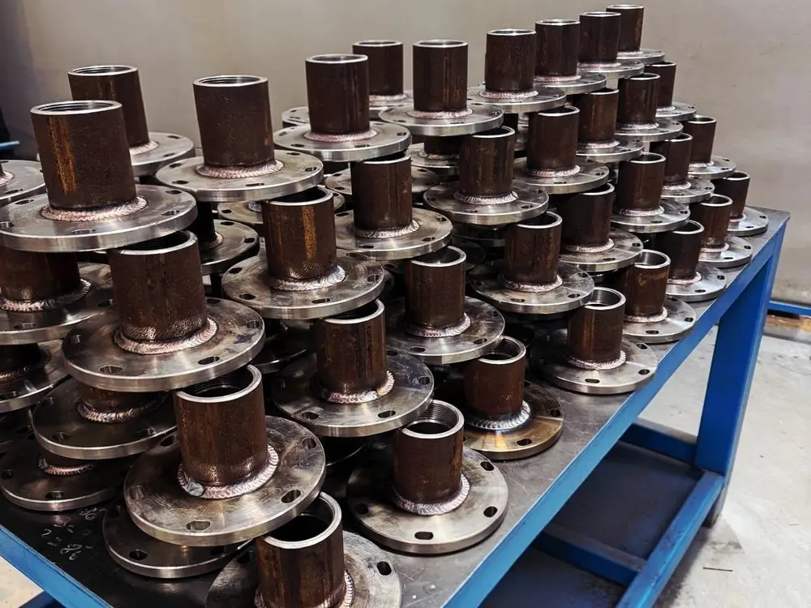

Yüksek hassasiyetli kaynaklı montaj, özel nozul-flanş birleştirmeleri ve sertifikalı seri imalat çözümleri.

Endüstriyel gaz hatlarında ve yüksek basınçlı akışkan sistemlerinde en kritik yapı taşı, iki metalik elemanın moleküler düzeyde kusursuz süreklilikle bir araya getirilmesidir. Nart Gaz olarak üretim kabiliyetimizi yalnızca anahtar teslim mega istasyon (RMS-A, RMS-B, RMS-C) projeleriyle sınırlamıyoruz; sanayinin ve iş ortaklarımızın ihtiyaç duyduğu en spesifik, fason veya seri parça birleştirme taleplerine de aynı askeri hassasiyet ve mühendislik ciddiyetiyle yanıt veriyoruz.
Tarafımıza ulaştırılan iki bağımsız parçanın (örneğin dövme çelik flanş ile çekme çelik borunun, özel dişli nozulların, manifold gövdelerinin veya basınç tutucu ara bağlantı elemanlarının) birleştirilmesinde; malzemenin kimyasal bileşimi, karbon eşdeğeri ve ısıdan etkilenen bölge (HAZ) dinamikleri titizlikle analiz edilir. Gerek tekil prototiplerde gerekse binlerce adetlik seri imalat partilerinde, kaynak ağzı geometrisinden kök paso nüfuziyetine kadar her aşama kayıt altına alınmış WPS (Kaynak Prosedür Şartnamesi) ve PQR (Prosedür Kalifikasyon Kaydı) parametrelerine harfiyen bağlı kalınarak icra edilir.
Özel bağlama fikstürleri ve hassas pozisyonerler kullanılarak ısıl çarpılmalar (distorsiyon) ve açısal kaçıklıklar tamamen engellenir; flanş yüzey paralelliği korunur.
Karbon çelikleri (P235GH, ASTM A106/A105), paslanmaz çelik grupları (AISI 304L/316L) ve yüksek mukavemetli boru çeliklerinde kusursuz kaynak kabiliyeti.
İsteğe ve proje şartnamesine bağlı olarak Görsel Muayene (VT), Sıvı Penetrant (PT), Manyetik Parçacık (MT), Ultrasonik (UT) ve Radyografik (RT) röntgen testleri.
İster elinizdeki ham parçaların fason olarak birleştirilmesi, ister sıfırdan malzeme teminiyle anahtar teslim üretimi; hızlı teslimat takvimleriyle.
Müşteriden gelen numune, parça veya CAD/teknik çizimler incelenerek kaynak ağzı geometrisi ve tolerans hedefleri belirlenir.
Oksit, yağ ve çapaklardan arındırılan parçalar, mikro eksenel sapmaları önleyen özel imalat aparatlarına hassasiyetle sabitlenir.
EN ISO 9606-1 / ASME sertifikalı uzman kaynakçılarımız tarafından kontrollü ısı girdisiyle kök ve dolgu pasoları çekilir.
Boyutsal ölçüm raporlamaları, sızdırmazlık ve hidrostatik mukavemet testleri tamamlanarak parçalar sevk edilmeye hazır hale getirilir.